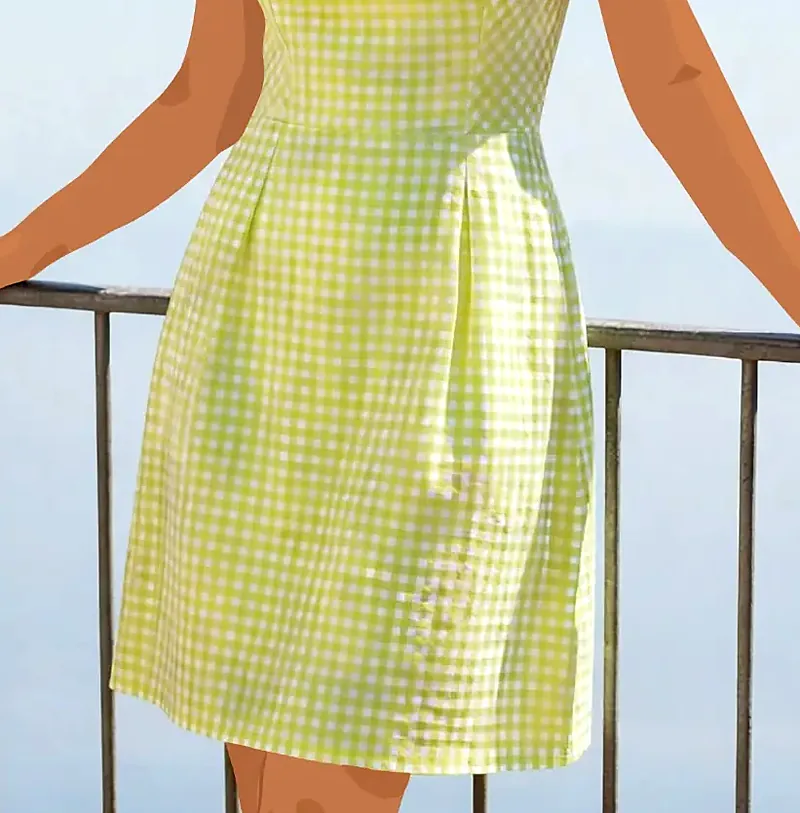
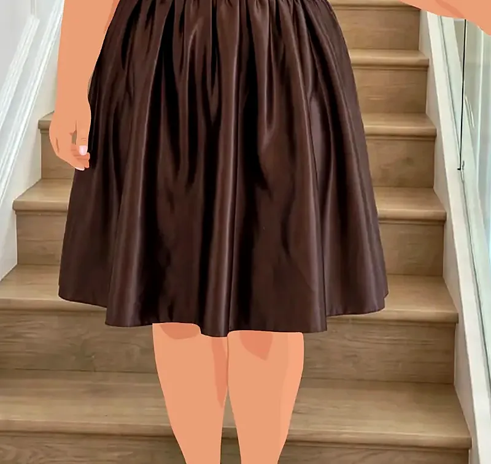
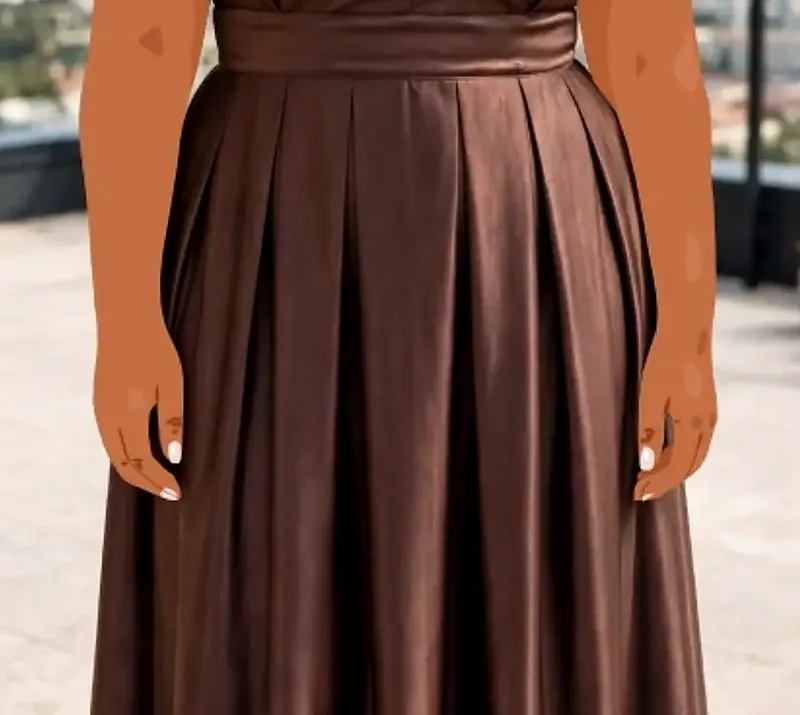
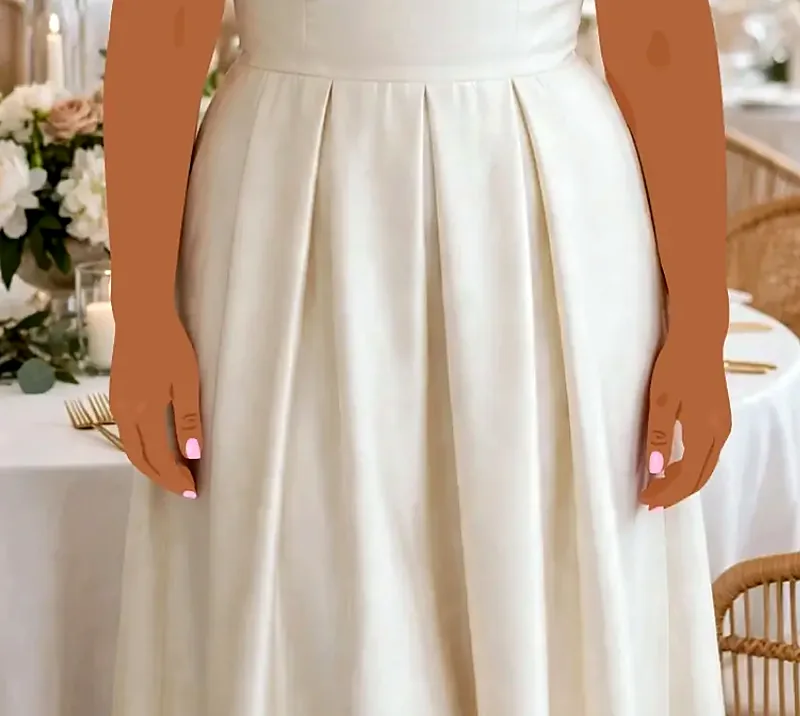
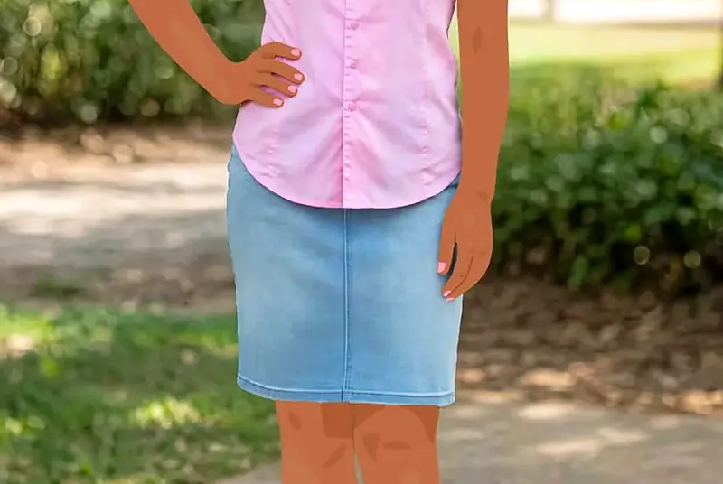
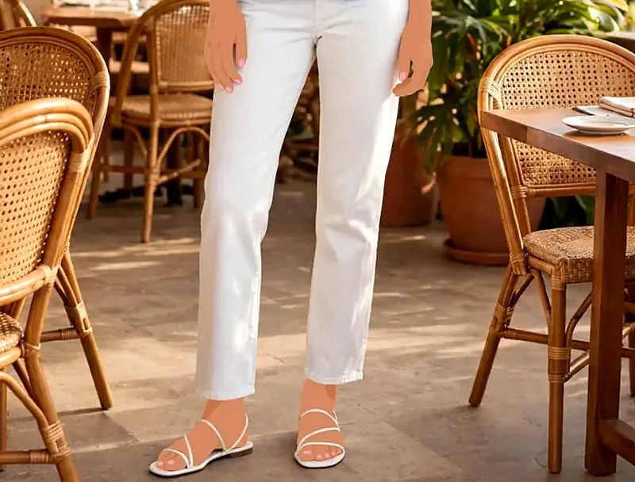
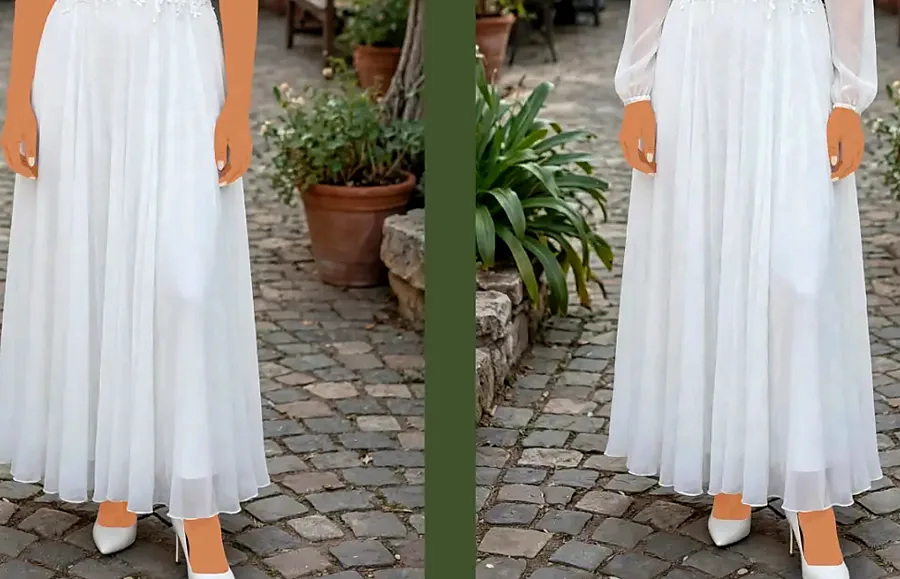
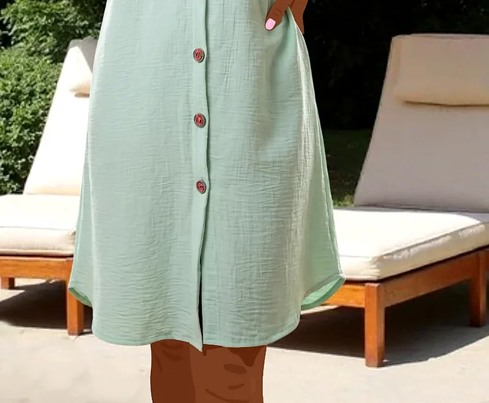
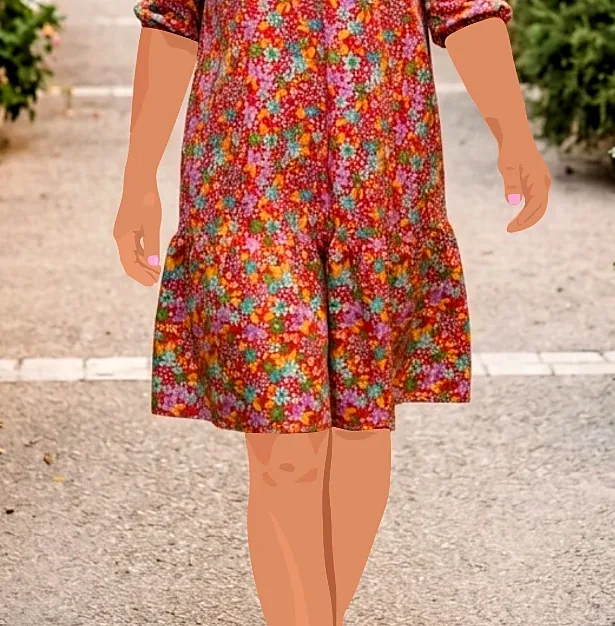
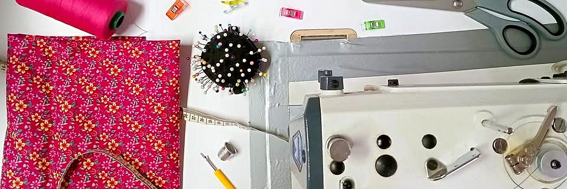

🪡
Retouches
Ourlets, ajustements, et même vos robes de mariée : manches ajoutées, coupe adaptée à la saison.
Retouches et confections sur mesure. Broderie pour les entreprises et les particuliers.


Ourlets, ajustements, et même vos robes de mariée : manches ajoutées, coupe adaptée à la saison.
Robes, chemisiers, blouses, tenues de cérémonie : une pièce unique, à vos mesures et à votre goût.
Pour les entreprises et les particuliers. Et des petites fleurs brodées à la main sur un col, pour la touche de fantaisie.
Vert anis et blanc, manches froncées, taille marquée par des pinces. « Une pièce lumineuse à la fois sage et joyeuse. »
À bretelles, jupe taille haute froncée et marquée par une ceinture. « Une tenue parfaite pour les fêtes. »

Total look marron chocolat, manches « ballons », jupe ample à plis.

Allure rétro-chic, jupe à plis creux et plats, et un gros nœud structuré.

En coton, col dague, et de petites fleurs brodées à la main sur le col.

Col mao, volants incrustés au col et au boutonnage : du romantisme.

Sans manche pour l'été, ou avec manches longues bouffantes pour la saison plus fraîche.

Col chemisier, manches à revers : la robe idéale pour les sorties décontractées.

Encolure en V, volant froncé en bas. Légère, confortable et facile à porter.
← faites glisser →

Cheveux bouclés ou lisses ? Longs ou courts ?
« Très satisfaite pour les confections de mes tenues et de mes retouches. Je recommande autour de moi. Travail rapide et bien fait »Germaine Rose, sur Facebook
Une robe faite pour vous, à vos mesures, pour briller aux repas de fin d'année. Ou une retouche pour remettre au goût du jour la robe que vous aimez tant.
Pensez-y tôt : le sur-mesure prend un peu de temps !
📍 Les Avirons, La Réunion
| Lundi → Vendredi | 8h–12h · 14h–16h45 |
| Samedi | Fermé |
| Jours fériés | Fermé |